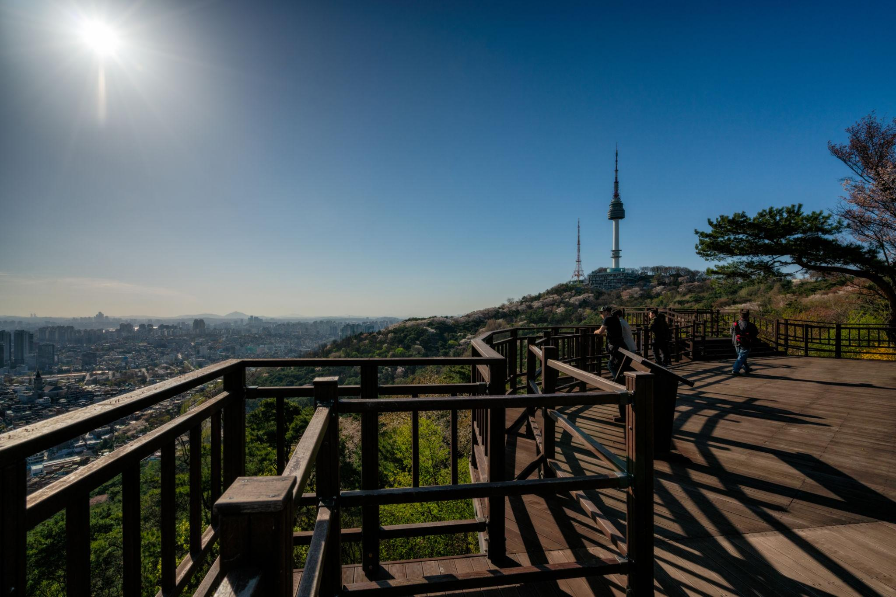
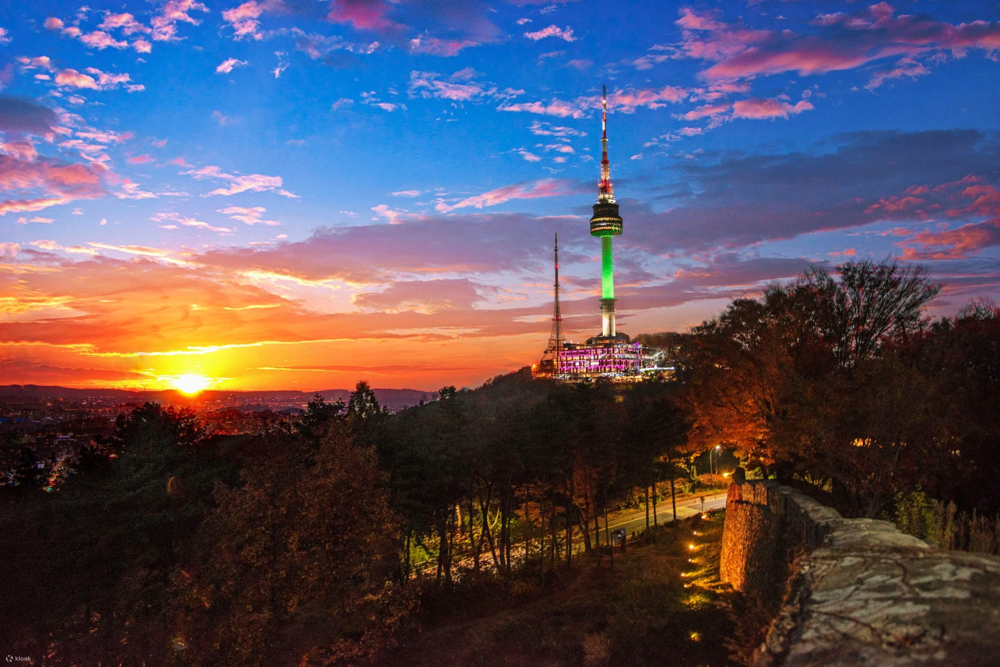
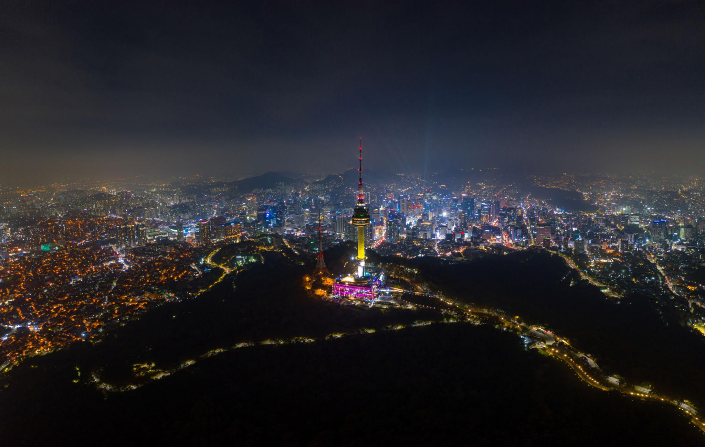
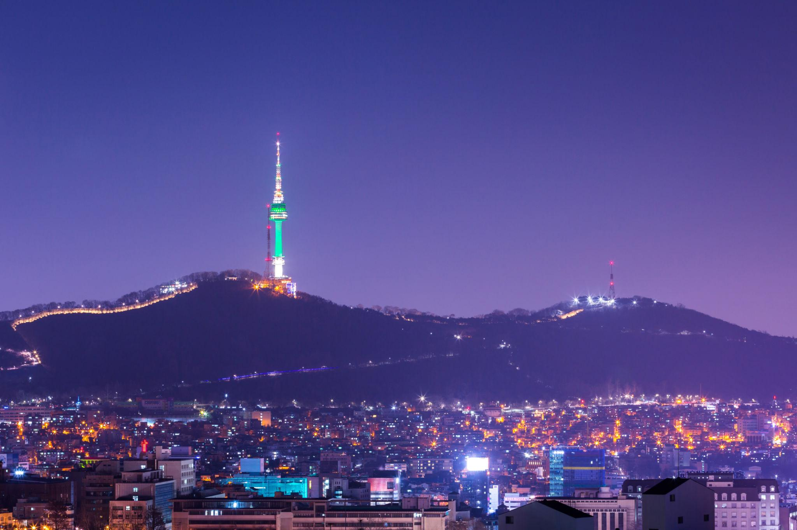
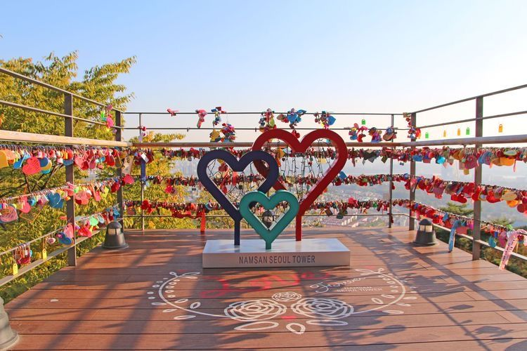
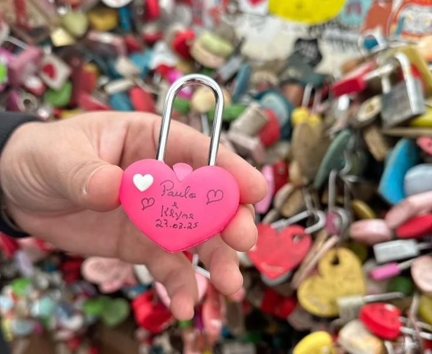
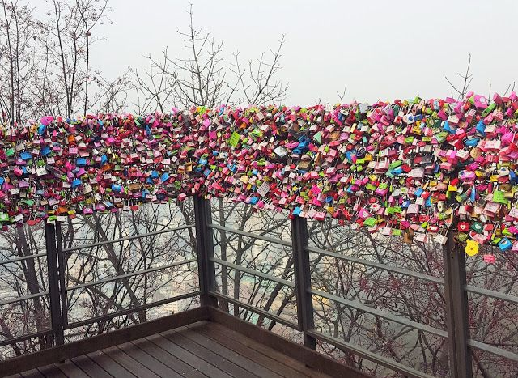
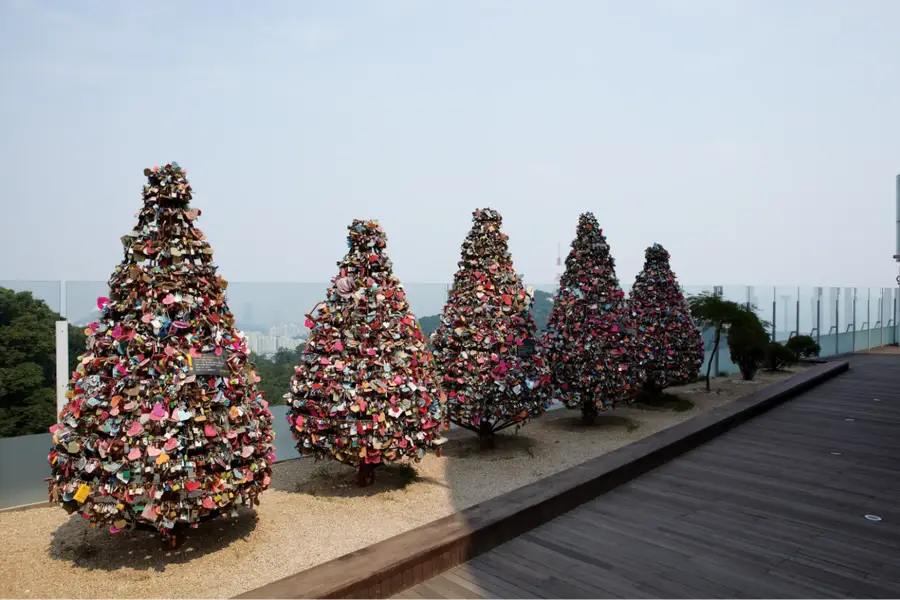
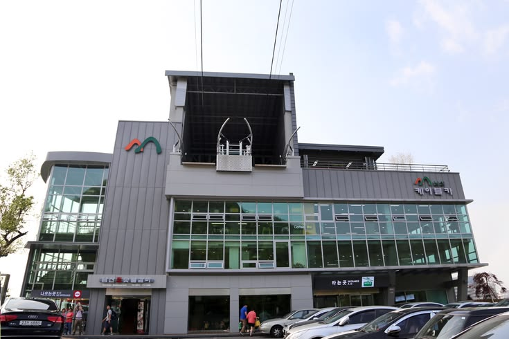
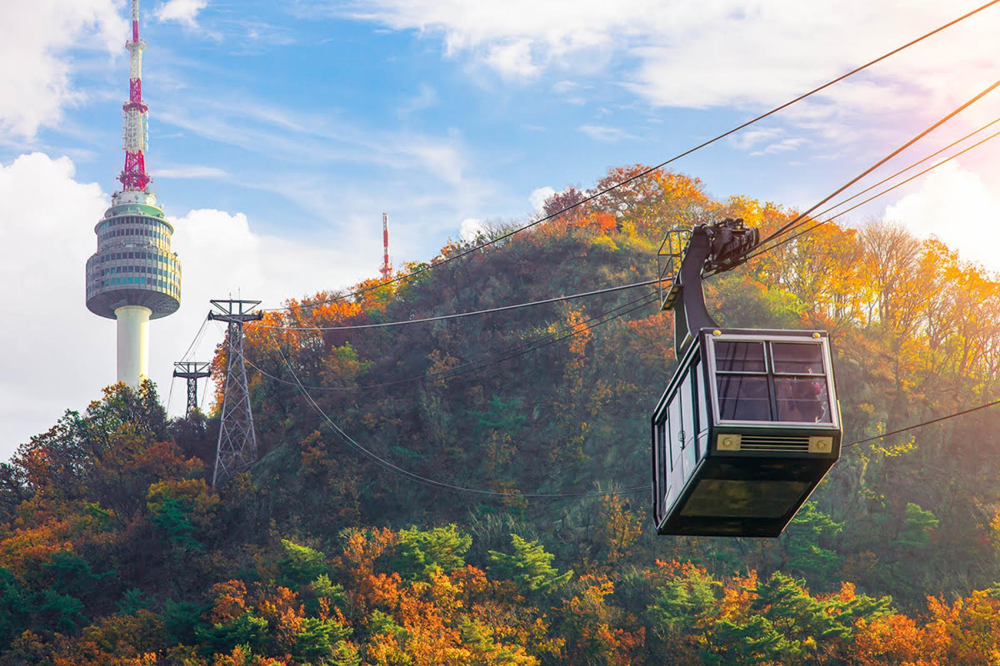

N Seoul Tower หรือที่เรียกกันว่า Namsan Tower (남산서울타워) เป็นหนึ่งในสถานที่ท่องเที่ยวที่มีชื่อเสียงที่สุดในกรุงโซล ประเทศเกาหลีใต้
ตั้งอยู่บนยอดเขานัมซาน (Namsan) และเป็นจุดชมวิวที่ยอดเยี่ยมสำหรับการชมวิวทิวทัศน์ของเมืองโซลและแม่น้ำฮัน (Han River)
ที่ไหลผ่านเมืองนี้ โดดเด่นด้วยวิวพาโนรามาของเมืองโซล โดยเฉพาะช่วงเย็นและกลางคืนที่แสงไฟทั่วเมืองสวยมาก เหมาะทั้งสำหรับการเที่ยวกับเพื่อน คู่รัก หรือถ่ายรูปสไตล์เกาหลี
สามารถมองเห็นวิวเมืองแบบ 360 องศา รวมถึงแม่น้ำฮันและตึกต่างๆ ของกรุงโซลได้อย่างชัดเจน โดยเฉพาะในช่วงเย็นและกลางคืน
ที่แสงไฟทั่วเมืองสวยงามมาก ให้ฟีลเหมือนในซีรีส์เกาหลีอีกด้วย




บริเวณรอบหอคอยมี “กุญแจแห่งความรัก” ที่นักท่องเที่ยวนิยมมาเขียนชื่อและคล้องไว้ เป็นจุดถ่ายรูปยอดฮิต
สถานที่นี้เป็นที่รู้จักกันดีในหมู่นักท่องเที่ยว โดยเฉพาะคู่รักที่มาเที่ยวโซล ซึ่งมักจะพากันมาเขียนชื่อและล็อกกุญแจ เพื่อแสดงถึงความรักของพวกเขา




การเดินทางไปยังพระราชวังเคียงบกนั้นสะดวกสบายมากๆ เพราะสามารถใช้บริการรถไฟใต้ดินได้ โดยสถานีที่ใกล้ที่สุด
คือสถานี Gyeongbokgung Station (สาย 3) ซึ่งอยู่ห่างจากพระราชวังเพียงไม่กี่ร้อยเมตรเท่านั้น นอกจากนี้ยังสามารถใช้บริการ
ลงที่สถานี Myeong-dong (Exit 1) แล้วเดินต่อประมาณ 1 กิโลเมตร โดยจะมีป้าย N Seoul Tower บอกทางตลอดเส้นทาง
สาย 2 : ผ่านสถานี Chungmuro และ Dongguk University (ทุก 15 นาที)
สาย 3 : ผ่านสถานี Seoul, Itaewon และ Hangangjin (ทุก 20 นาที)
สาย 5 : ผ่านสถานี Myeong-dong และ Chungmuro (ทุก 15 นาที)
สะดวกที่สุด แต่ช่วงเย็นอาจมีรถติดเล็กน้อย
ขึ้นกระเช้าจากสถานี Namsan Seoul Tower Cable Car ซึ่งอยู่ใกล้กับสถานี Myeong-dong (Exit 3) ใช้เวลาประมาณ 5 นาที

